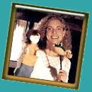

Free Puppets
12/7/2009
Question: I was wondering if you have a puppet to donate? I know this seems to greedy to ask, but I have a son who's ill and I saw your puppet on the Internet and I liked them very much and gave me an idea to give this to my son for Christmas and not only that I know I can make him laugh a lot and happy. I'm not working because I too am ill and going through some hard times. I thought it won't hurt to ask.
* * * * *
Answer: There's never a good time to be ill - certainly not this season of the year. I wish for both you and your son a complete recovery. While we do have charitable organizat
You'll find many more make-it-yourself puppet resources here:
http://www.teacherhelp.org/puppets.htm#sock
Enjoy!
Clinton
* * * * *
Answer: There's never a good time to be ill - certainly not this season of the year. I wish for both you and your son a complete recovery. While we do have charitable organizat
{kind=link}

ions and groups to which we contribute, we regret we are unable to accommodate all requests for donated puppets. However, there are a number of free resources available to those who can make their own puppets. Doing so can be both effective and rewarding. I would recommend starting with a sock puppet. Here's an excellent site where Evy Wright, puppet designer and puppeteer (right) for The Lady from Sockholm , and co-owner of Curious Moon Puppet Theatre, shares instructions on how you can make a sock puppet at home.: http://www.sockholm.com/games2.htm If you and/or your son are unable to make the puppet yourself, perhaps you have a friend or family member who would like to do it for you.You'll find many more make-it-yourself puppet resources here:
http://www.teacherhelp.org/puppets.htm#sock
Enjoy!
Clinton